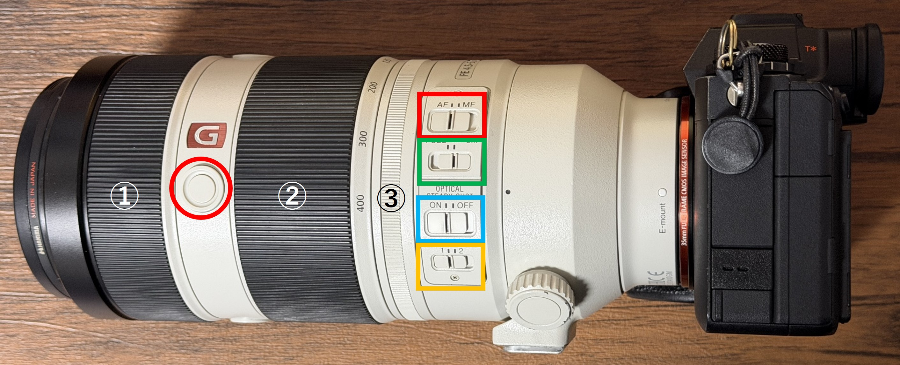

Chapter 2
レンズ-ボタン割当
FE 100–400mm F4.5–5.6 GM OSS（SEL100400GM）レンズ側スイッチ・リングの機能と活用法。

フォーカスリング、ズームリング、ズーム操作調整リング
- フォーカスリング： リング①
(MF操作時)ピント位置を手動で調整するためのリングです。使用することはないと思います。 - ズームリング： リング②
焦点距離を変更するためのリングです。 - ズーム操作調整リング： リング③
ズームリングの操作感を変更するためのリングです。
Smooth/Tightの切替が可能です。
※Smooth状態では、自重によりレンズが勝手に伸びるので、
持ち運び時はTightに設定してください。
ボタン(赤丸)
本ボタンはレンズの上下と左位置(赤丸位置)に設置されています。
機能としては押す間トラッキング+AFオンが設定してあり、
撮影対象が動き回っており、ピントが合いにくい場合は本ボタンを押すのが良いかと思います。
機能としては押す間トラッキング+AFオンが設定してあり、
撮影対象が動き回っており、ピントが合いにくい場合は本ボタンを押すのが良いかと思います。
フォーカスモードスイッチ(赤四角)
レンズ側でAF/MFの切替が可能なスイッチです。
※本スイッチがMF側に設定されている場合、カメラ側からのAF/MF切替は不可になるので、
注意してください。
※本スイッチがMF側に設定されている場合、カメラ側からのAF/MF切替は不可になるので、
注意してください。
フォーカスレンジリミッタースイッチ(緑丸)
ピントが合う距離の制限ができます。今回は「3m-∞」に設定するのがいいと思います。
※Fullに設定するとカメコの頭にピントを持っていかれます。
※Fullに設定するとカメコの頭にピントを持っていかれます。
手ブレ補正（OSS）スイッチ(青丸)
レンズ側の光学式手ブレ補正機能のON/OFF切替が可能なスイッチです。
基本的には手持ち撮影では、レンズ側の手ブレ補正を使用したい場合はONを使用します。
基本的には手持ち撮影では、レンズ側の手ブレ補正を使用したい場合はONを使用します。
手ブレ補正モードスイッチ(橙丸)
レンズ側の光学式手ブレ補正機能ON時の補正モードを選択できます。
MODE1： 通常撮影 ← 今回はこちら。
MODE2： 流し撮り
MODE1： 通常撮影 ← 今回はこちら。
MODE2： 流し撮り